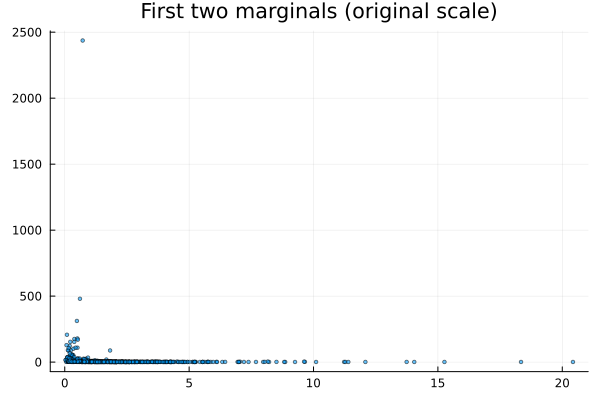
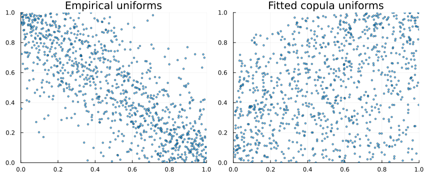

Fitting compound distributions
Through the SklarDist interface, it is possible to fit distributions constructed from a copula and marginals:
using Copulas
using Distributions
# Let's sample some datas:
X₁ = LogNormal()
X₂ = Pareto()
X₃ = Gamma()
X₄ = Normal()
C = SurvivalCopula(FrankCopula(4,7),(2,4))
D = SklarDist(C,(X₁,X₂,X₃,X₄))
data = rand(D,1000)4×1000 Matrix{Float64}:
0.42649 0.339655 4.73121 2.70241 … 3.11633 1.30148 4.34795
4.36448 2.79949 1.1381 1.13256 1.05705 1.34227 1.25955
0.171946 0.130536 3.8503 3.11556 2.62838 1.91163 1.66558
0.387984 -0.906117 -1.2371 -0.476623 -1.76324 -0.715454 -0.978895The fit function uses a type as its first argument that describes the structure of the model :
MyCop = SurvivalCopula{4,ClaytonCopula,(2,4)}
MyMargs = Tuple{LogNormal,Pareto,Gamma,Normal}
MyD = SklarDist{MyCop, MyMargs}
fitted_model = fit(MyD,data)SklarDist{SurvivalCopula{4, ClaytonCopula{4, Float64}, Tuple{Int64, Int64}}, Tuple{Distributions.LogNormal{Float64}, Distributions.Pareto{Float64}, Distributions.Gamma{Float64}, Distributions.Normal{Float64}}}(
C: SurvivalCopula(ClaytonCopula{4, Float64}(-0.3138016767461605,))
m: (Distributions.LogNormal{Float64}(μ=0.011818386060403861, σ=0.9840499866093556), Distributions.Pareto{Float64}(α=0.9709664142964622, θ=1.000198897360517), Distributions.Gamma{Float64}(α=1.0304269877261232, θ=0.9854207509583821), Distributions.Normal{Float64}(μ=-0.012966613572059915, σ=0.9712433497596991))
)
Another possibility is to use an empirical copula and only fit the marginals:
other_fitted_model = fit(SklarDist{EmpiricalCopula,MyMargs},data)SklarDist{EmpiricalCopula{4, Matrix{Float64}}, Tuple{Distributions.LogNormal{Float64}, Distributions.Pareto{Float64}, Distributions.Gamma{Float64}, Distributions.Normal{Float64}}}(
C: EmpiricalCopula{d}(4, 1000)
m: (Distributions.LogNormal{Float64}(μ=0.011818386060403861, σ=0.9840499866093556), Distributions.Pareto{Float64}(α=0.9709664142964622, θ=1.000198897360517), Distributions.Gamma{Float64}(α=1.0304269877261232, θ=0.9854207509583821), Distributions.Normal{Float64}(μ=-0.012966613572059915, σ=0.9712433497596991))
)
This simple interface leverages the fit function from Distributions.jl. According to their documentation, this function is not supposed to use a particular method but to fit "quick and dirty" some distributions.
So you have to be careful: the fit method might not be the same for different copulas or different marginals. For example, Archimedean copulas are fitted through inversion of the Kendall tau function, while the Gaussian copula is fitted by maximum likelihood.
Visual checks
Scatter of original data (first two dims)
using Plots
scatter(data[1,:], data[2,:]; ms=2, alpha=0.6, title="First two marginals (original scale)", legend=false)
Pseudo-observations vs simulated from fitted copula
U = Copulas.pseudos(data) # pseudo-observations (uniforms)
Usim = rand(fitted_model.C, size(data,2)) # simulate same length from fitted copula
P1 = scatter(U[1,:], U[2,:]; ms=2, alpha=0.6, xlim=(0,1), ylim=(0,1), title="Empirical uniforms", legend=false)
P2 = scatter(Usim[1,:], Usim[2,:]; ms=2, alpha=0.6, xlim=(0,1), ylim=(0,1), title="Fitted copula uniforms", legend=false)
plot(P1, P2; layout=(1,2), size=(850,350))